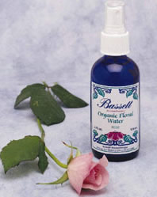
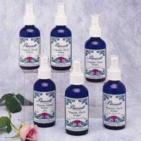

BRINGING
THERAPEUTIC
QUALITY
ESSENTIAL OIL
INTO EVERY
ENVIRONMENT ®.
 Organic Floral Waters/Hydrosols |
 |
 |
|
Specialty
Formulas - lotions, massage oils, Zone Therapy |
|
ORGANIC FLORAL WATERSTechnically called a 'hydrosol', our Floral Waters come directly from the steam distillation process of essential oil extraction, and contain the very valuable plant compounds that become dissolved in the distillation water. These compounds are water-soluble, and, by definition, are not contained in the essential oils. Milder and easier to use than essential oils, Organic Floral Waters make a delightful facial or body splash and are good for toning and conditioning. Organic Floral Waters come full strength from the distillery and are not to be confused with 'misters' that are made by adding essential oil to distilled water. Sold in blue glass or plastic bottles with fine mist sprayers, these Floral Waters are 4 oz. of pure luxury.
MASSAGE OIL, ZONE THERAPY ®, AND BODY LOTIONThese are special products for special uses. Our aromatic Massage Oil is an extra rich blend of pure essential oils in a cold pressed oil base. For foot care or problem areas, our Zone Therapy ® is a concentration of oils designed to relax or rejuvenate, and can be added to a soak, or massaged directly into a sore spot. Our Body Lotion is luxurious, completely botanical and leaves skin hydrated and supple. It includes special combinations of oils traditionally associated with relaxing, rejuvenation or sensual occasions. |
|